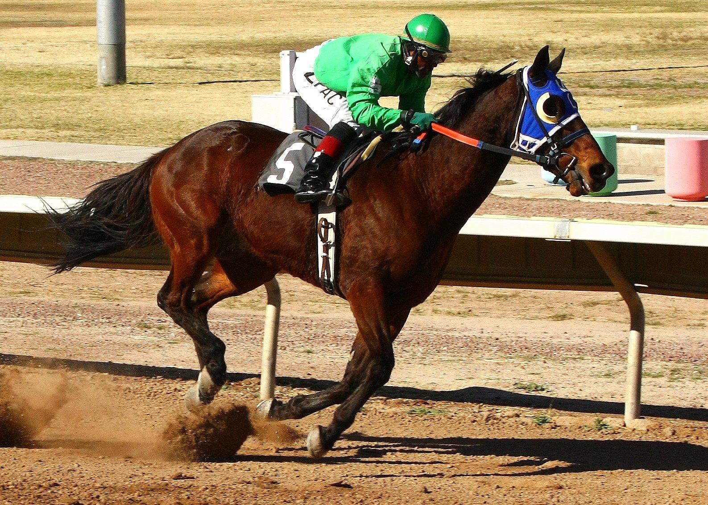

Idao de Tillard llega invicto a Toulouse e Inexess Bleu busca la revancha
Ocho trotadores disputan este miércoles en Toulouse el 49º Grand Prix du Sud-Ouest (Gr. 2), sobre 2.750 metros con salida autostart. El duelo entre Idao de Tillard e Inexess Bleu concentra el interés.

La sexta carrera de la reunión (R1C6) sale a las 16.50, en una pista de cuerda a derechas. Idao de Tillard, con el 5, no conoce la derrota en sus cuatro últimas salidas. La más reciente fue a principios de septiembre en La Capelle, en el Grand Prix Fédération Régionale du Nord. El campeón de la cuadra Duvaldestin sigue de gira por las pistas de provincias mientras afina su preparación para el meeting de invierno. Doble ganador del Prix d'Amérique (2024 y 2025), es el caballo a batir.
Enfrente estará Inexess Bleu (6), la principal baza de Laurent-Claude Abrivard. Viene de cometer una falta en el Grand Prix de Wallonie (Gr. 1) y tiene una cuenta pendiente con Idao de Tillard desde La Capelle. Aquel cruce se corrió sobre 1.800 metros. El de este miércoles añade 950 más, un terreno en el que Inexess Bleu debería poder plantarle cara.
Entre los aspirantes a la sorpresa asoma Idéal du Rocher (7), que también sale del entrenamiento de Thierry Duvaldestin. Ha pasado los últimos meses preparándose sobre hierba y suele terminar muy fuerte sus recorridos. Si alguno de los dos favoritos falla, puede colarse entre los dos primeros.
Jeannette Priory (2) llega en su mejor momento: ganó la novena etapa del GNT en Angers y fue cuarta en Argentan. Se maneja muy bien a mano derecha y tiene un buen número detrás del auto.
Lo tienen más difícil Ninepoints Lasse (8) y Hymne du Gers (3). Ninepoints Lasse encadena actuaciones flojas en Suecia y saldrá por fuera de todo, pegado a las alas del auto. Los dos participantes de once años, Filou d'Anjou (1) y Fakir Mérité (4), corrieron bien hace poco en esta misma pista con recargo de distancia, pero el miércoles la tarea se les complica mucho.
Por Martín Larrañeta